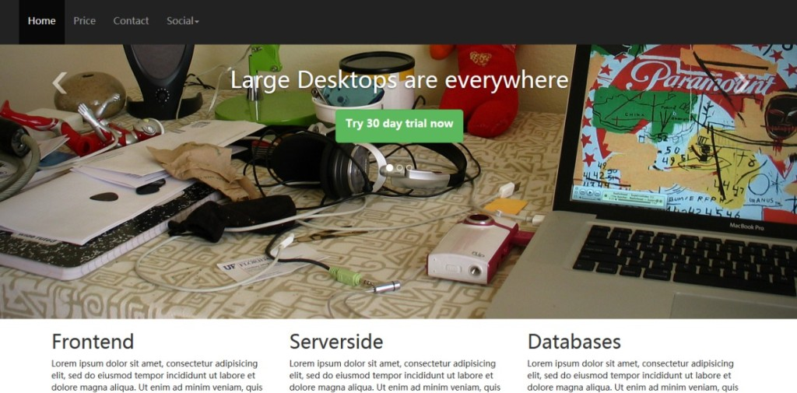

Bootstrap 简介
目标
Bootstrap是最流行的前端框架，目前已经发布了它的第三个版本（v3.0.0）。本教程将带您开始学习 Bootstrap 3。
您还将看到如何使用自定义与众不同的框架的框特征，比如使用网格创建布局，通过 nav 创建导航，使用 carousal 创建下拉框，添加社交插件和 Google Map 等第三方插件。

什么是 Bootstrap
Bootstrap 是一个用于快速开发 Web 应用程序和网站的前端框架。
在现代 Web 开发中，有几个几乎所有的 Web 项目中都需要的组件。
Bootstrap 为您提供了所有这些基本的模块 - Grid、Typography、Tables、Forms、Buttons 和 Responsiveness。
此外，还有大量其他有用的前端组件，比如 Dropdowns、Navigation、Modals、Typehead、Pagination、Carousal、Breadcrumb、Tab、Thumbnails、Headers 等等。
有了这些，你可以搭建一个 Web 项目，并让它运行地更快速更轻松。
此外，由于整个框架是基于模块的，您可以通过您自己的 CSS 位，甚至是项目开始后的一个大整改，来进行自定义。
它是基于几种最佳实践，我们认为这是一个很好的开始学习现代 Web 开发的时机，一旦您掌握了 HTML 和 JavaScript/jQuery 的基本知识，您就可以在 Web 开发中运用这些知识。
虽然，也有批评，所有通过 Bootstrap 构建的项目看起来相同，您可以不需要知道太多的 HTML + CSS 知识就可以构建一个网站。但是，我们需要明白，Bootstrap 是一个通用的框架，就像任何其他通用的东西，您需要定制才能让它具有独特性。当您要定制时，您需要深入研究，没有良好的 HTML + CSS 基础是不可行的。
当然除了 Bootstrap，还有很多其他好的前端框架，使用哪种框架是开发人员的选择，但 Bootstrap 绝对是值得尝试的。
为什么要在项目中使用 Bootstrap？
下载并理解文件结构
您可以从 https://github.com/twbs/bootstrap/archive/v3.0.0.zip 或 https://github.com/twbs/bootstrap/releases/download/v3.0.0/bootstrap-3.0.0-dist.zip 上下载 Bootstrap Version 3.0.0。我们使用的是第一个，您也可以使用第二个。
此外，我们提供下载的代码包含了一个通过第一个链接下载的 bootstrap 代码文件夹。这里边也包含了用来定制 Bootstrap 的原始的 css 的 custom.css。
解压缩后，您会发现，在根文件夹 bootstrap-3.0.0 内有一些文件和文件夹。
主要的 CSS 文件 - bootstrap.css 以及它的简化版 bootstrap-min.css，位于根文件夹 bootstrap-3.0.0 下 的 'dist' 文件夹中的 'css' 文件夹中。
在 'dist' 内，有一个 'js' 文件夹，包含了主要的 JavaScript 文件 bootstrap.js 以及它的简化版。
在根文件内，有一个单独的 'js' 文件夹，包含了不同文件中的不同的 JavaScript 插件。
在根文件内的 'assets' 内，会找到另一个 'js' 文件夹。这里放置着 HTML5 shim 的 html5shiv.js，用于获得 IE8 支持。还有一个 respond.min.js 文件，用于支持 IE8 中的多媒体查询。该文件夹还包含了 Bootstrap 的 js 插件依赖的 jquery.js。
在相同的文件夹内，有一个 'ico' 文件夹，包含了 favicon 图标和各种移动设备图标。
在同一路径中的 'css' 文件夹，包含了文档的 css 文件。
'_includes' 和 '_layouts' 文件夹包含了一些默认的布局结构文件，这些可能对快速原型设计很有用。
根文件夹内的 'less' 文件夹包含了一些 .less 文件。如果您要基于 LESS 进行开发，这些文件将会很有用。
在根文件夹内，有一些文件。一些是用于基础原型设计的 HTML 文件，一些是用于基于 Bower 编译的 bower.json、browserstack.json。除此之外，还有 composer.json 和一个 YAML 文件 _config.yml。
除了从给定的链接进行下载，您还可以使用下面的命令编译所有的 CSS、JS 文件 -
$ bower install bootstrap
您可以复制 Bootstrap 的 Git 报告
git clone git://github.com/twbs/bootstrap.git
本教程中，我们仅仅下载了 Zip 文件，并不对它进行使用。
一旦您学习了本教程，我们鼓励您通过 bower 安装框架来了解它是如何工作的。
NetDNA 支持编译和简化版的 Bootstrap CSS、Js 和其他主题 css。您可以通过以下语句对它们进行引用
<!-- Latest compiled and minified CSS --> <link rel="stylesheet" href="//netdna.bootstrapcdn.com/bootstrap/3.0.0/css/bootstrap.min.css"> <!-- Optional theme --> <link rel="stylesheet" href="//netdna.bootstrapcdn.com/bootstrap/3.0.0/css/bootstrap-theme.min.css"> <!-- Latest compiled and minified JavaScript --> <script src="//netdna.bootstrapcdn.com/bootstrap/3.0.0/js/bootstrap.min.js"></script>
通过 Bootstrap v3.0.0 进行开发
基本的 HTML
以下是将用于我们项目的基本的 HTML 结构
<!DOCTYPE html>
<html>
<head>
<title>Bootstrap V3 template</title>
<meta name="viewport" content="width=device-width, initial-scale=1.0">
<!-- Bootstrap -->
<link href="bootstrap-3.0.0/dist/css/bootstrap.min.css" rel="stylesheet" media="screen">
<!-- HTML5 shim and Respond.js IE8 support of HTML5 elements and media queries -->
<!--[if lt IE 9]>
<script src="bootstrap-3.0.0/assets/js/html5shiv.js"></script>
<script src="bootstrap-3.0.0/assets/js/respond.min.js"></script>
<![endif]-->
</head>
<body>
<h1>Hello, world!</h1>
<!-- jQuery (necessary for Bootstrap's JavaScript plugins) -->
<script src="//code.jquery.com/jquery.js"></script>
<!-- Include all compiled plugins (below), or include individual files as needed -->
<script src="bootstrap-3.0.0/dist/js/bootstrap.min.js"></script>
</body>
</html>
请注意，模板中添加的 html5shiv.js 和 respond.min.js 是用于获得 IE8 支持。在 Bootstrap 版本 3 中已经添加了这些文件。
我们在 Web 服务器的根文件夹内的 twitter-bootstrap 文件夹内，已经放置了 bootstrap-3.0.0 文件夹。我们创建的所有 HTML 文件将会放置在 twitter-bootstrap 内。之所以说明这点，是为了简化我们的开发过程。
定制
我们将定制与众不同的 CSS 框样式。所以，在不破坏原始的 CSS 文件的基础上（位于 bootstrap-3.0.0 的 dist 文件夹内），在相同的文件夹下，我们将创建一个独立的 CSS 文件，名为 custom.css。然后我们在 HTML 文件中，紧接在原始的 CSS 文件后面，引用这个 CSS 文件。这样，我们就能覆盖我们想要改变的默认的样式，但是，如果 Bootstrap 升级，原始的 CSS 文件也会在不破坏我们的定制的基础上随之更新。我们建议您在开发过程中也按照这种方法。
创建导航
如需创建导航，请在 HTML 文件中，紧跟着 body 的开始标签之后，添加下面的代码。
<nav class="navbar navbar-inverse navbar-fixed-top" role="navigation">
<ul class="nav navbar-nav">
<li><a href="new.html" class="navbar-brand">
<img src="logo.png"></a></li>
<li class="active"><a href="#">Home</a></li>
<li><a href="price.html">Price</a></li>
<li><a href="contact.html">Contact</a></li>
<li class="dropdown">
<a href="#" class="dropdown-toggle" data-toggle="dropdown">Social<b class="caret"></b></a>
<ul class="dropdown-menu">
<li class="socials"><g:plusone annotation="inline" width="150"></g:plusone></li>
<li class="socials"><div class="fb-like" data-href="https://developers.facebook.com/docs/plugins/" data-width="The pixel width of the plugin" data-height="The pixel height of the plugin" data-colorscheme="light" data-layout="standard" data-action="like" data-show-faces="true" data-send="false"></div></li>
<li class="socials"><a href="https://twitter.com/share" class="twitter-share-button">Tweet</a>
<script>!function(d,s,id){var js,fjs=d.getElementsByTagName(s)[0];if(!d.getElementById(id)){js=d.createElement(s);js.id=id;js.src="//platform.twitter.com/widgets.js";fjs.parentNode.insertBefore(js,fjs);}}(document,"script","twitter-wjs");</script></li>
</ul>
</li>
</ul>
</nav>
对于导航，Bootstrap 在容器层级中使用 'navbar' class。所以，它会分配给持有整个导航的 nav 元素。
我们已经使用了 'navbar-inverse' class 来改变导航栏的默认颜色，使用深色代替之前默认的浅色。'navbar-fixed-top' class 确保了当我们向下滚动 HTML 页面时，导航栏固定在顶部位置。
在 Bootstrap V3.0.0 中，当创建导航的时候使用 role="navigation" 是新增的。Bootstrap 推荐这么使用，以便于导航栏易于访问。
在这一点上，我们在 custom.css 文件中向 body 增加了 'padding-top: 80px;'。您添加到 body 中作为顶部填充的像素可能会有所不同，但除非你这样做，导航栏之后的内容的顶端部分，将会被隐藏。
在容器 nav 内，我们有一个 class 为 'nav' 和 'navbar-nav' 的无序列表。在这个无序列表内，每个列表项都包含导航中的一个链接。
'navbar-brand' class 用于呈现品牌名称。我们已经使用了一个图像。由于图像的高度大于导航栏基线高度，在这里我们做一些自定义。把 '.navbar-nav>li>a' 的 'line-height' 属性从原来默认的 20px 增加到 50px，改变字体大小为 16px。
最右边的链接，我们已经增加了下拉框。对于添加到相关 li 中的 'dropdown' class，紧跟其后，添加一个带有 'dropdown-toggle' 和 'caret' 两个 class 的锚。这个锚实际上包含了我们项目中的锚文本 social。这个 li 则包含了一个无序列表，嵌套在列表中的每个列表项都包含了显示在下列框中的链接。
在下拉框中我们已经添加了 social 插件。第一个 li 包含了 Google Plus 标记，第二个 li 包含了 Facebook 标记，第三个 li 包含了显示 Twitter 按钮的标记和一些 js 脚本。
此外，您必须在 body 的开始标签后，添加下面的标记和脚本，以使 Facebook 按钮工作
<div id="fb-root"></div>
(function(d, s, id) {
var js, fjs = d.getElementsByTagName(s)[0];
if (d.getElementById(id)) return;
js = d.createElement(s); js.id = id;
js.src = "//connect.facebook.net/en_US/all.js#xfbml=1";
fjs.parentNode.insertBefore(js, fjs);
}(document, 'script', 'facebook-jssdk'));
为了让 Twitter 按钮工作，我们在 body 的结束标签前，增加下面的脚本
(function() {
var po = document.createElement('script'); po.type = 'text/javascript'; po.async = true;
po.src = 'https://apis.google.com/js/plusone.js';
var s = document.getElementsByTagName('script')[0]; s.parentNode.insertBefore(po, s);
})();
我们使用下面的样式来添加一些额外的样式到 'socials' class 的 social 按钮。
.socials {
padding: 10px;
}
这样就完成了我们的导航。
通过 carousal 创建幻灯片
为了在项目的首页的导航栏下，创建一个幻灯片，我们将使用下面的标记
<div id="carousel-example-generic" class="carousel slide">
<!-- Indicators -->
<ol class="carousel-indicators">
<li data-target="#carousel-example-generic" data-slide-to="0" class="active"></li>
<li data-target="#carousel-example-generic" data-slide-to="1"></li>
<li data-target="#carousel-example-generic" data-slide-to="2"></li>
</ol>
<!-- Wrapper for slides -->
<div class="carousel-inner">
<div class="item active">
<img src="computer.jpg" alt="...">
<div class="carousel-caption">
<h1>Large Desktops are everywhere</h1>
<p><button class="btn btn-success btn-lg">Try 30 day trial now</p>
</div>
</div>
<div class="item">
<img src="mobile.jpg" alt="...">
<div class="carousel-caption">
<h1>Mobiles are outnumbering desktops</h1>
<p><button class="btn btn-success btn-lg">Try 30 day trial now</p>
</div>
</div>
<div class="item">
<img src="cloud1.jpg" alt="...">
<div class="carousel-caption">
<h1>Enterprises are adopting Cloud computing fast</h1>
<p><button class="btn btn-success btn-lg">Try 30 day trial now</p>
</div>
</div>
</div>
<!-- Controls -->
<a class="left carousel-control" href="#carousel-example-generic" data-slide="prev">
<span class="icon-prev"></span>
</a>
<a class="right carousel-control" href="#carousel-example-generic" data-slide="next">
<span class="icon-next"></span>
</a>
</div>
</div>
在 Carousal 中有四个部分。主容器使用一个带有 'carousel slide' class 的 div 标签定义。
然后是一个带有 'carousel-indicators' class 的有序列表。ol 中的每个列表项代表一个幻灯。当页面加载时，默认加载的幻灯带有 'active' class。当渲染时，您会在标题下面的小圆圈看到它们。
然后，每个幻灯（图像）被放置在一个带有 'item' class 的 div 标签中。每个项被嵌套在一个带有 'carousel-caption' class 的 div 中。carousel-caption 包含一些与图像一起显示为标题的标记。段落中包含一个 h1 和一个按钮，您也可以包含其他自己的标记。
最后一部分是用于控制下一个幻灯/上一个幻灯片。这是使用 'left' 和 'carousel-control' class 定义上一个，使用 'right' 和 'carousel-control' class 定义下一个。
'icon-prev' 和 'icon-next' class 用于下一个和上一个图标。
我们已经在默认的 carousal 中做了一些定制。我们希望字幕，指标和下一个/上一个图标被渲染成在默认位置之上的几个像素。
为了做到这点，我们在 custom.css 文件中添加下面的样式
.carousel-inner .item .carousel-caption {
position:absolute;
top: 200px
}
.carousel-indicators {
position: absolute;
top: 400px;
}
.navbar {
margin-bottom:0;
}
.navbar-nav>li>a {
line-height: 50px;
font-size: 16px
}
我们还定制了 h1，给它添加了一个 30 像素的底部边距。
h1 {
margin-bottom: 30px
}
响应图像
您可能已经注意到，在幻灯片中的每个图像，我们已经使用了 'img-responsive' class。这是一个 Bootstrap v3.0.0 中的新功能。通过在 img 标签中使用 'img-responsive' class，Bootstrap 让图像响应。
创建网格
在幻灯片下面，我们使用网格放置内容。通过一个带有 'container' class 的 div 开始一个网格。请注意，我们将要开发一个反应灵敏的网站，而不是之前版本的 Bootstrap，在这里，容器有一个单一的 class，默认是 responsive。
容器 div 嵌套了若干个带有 'row' class 的 div（第一行中有三个，第二行中有六个），用来创建 Bootstrap 网格的行。
每个行都有一个带有 'col-x-y' class 的 div，用来创建列。x 的值可以是：用于移动设备的 xs、用于平板电脑的 sm、用于笔记本电脑和更小的桌面屏幕的 md，用于大的桌面屏幕的 lg。这是第一种方法。y 的值可以是任何正整数，但网格中列的总数必须不超过 12 个。在我们的项目中，为简单起见我们已经使用了 lg，但既然我们已经这样做了，您可能拿一个手机或平板电脑观看项目站点，以进行比较。
在后面的教程中，我们将有一个 Bootstrap 网格系统的完整教程，来探讨它迷人的响应特性。
在这个实例中，我们想让第一行的三个列宽度相等，所以我们对所有的列使用 'col-lg-4'。在第二行中，我们想让六个列宽度相等，所以我们对所有的列使用 'col-lg-2'。
下面是包含两个行的网格的标记，第一行有三列，第二行有六列。
<div class="row barone"> <div class="col-lg-2"> <p><img src="http://www.runoob.com/wp-content/uploads/2013/10/php.png"></p> </div> <div class="col-lg-2"> <p><img src="http://www.runoob.com/wp-content/uploads/2013/10/mysql-logo.jpg"></p> </div> <div class="col-lg-2"> <p><img src="http://www.runoob.com/wp-content/uploads/2013/10/javascript-logo.png"></p> </div> <div class="col-lg-2"> <p><img src="http://www.runoob.com/wp-content/uploads/2013/10/java.jpg"></p> </div> <div class="col-lg-2"> <p><img src="http://www.runoob.com/wp-content/uploads/2013/10/postgresql.png"></p> </div> </div>
我们通过一个 hr 和一个带有下列标记的页脚结束网格
<hr> <p>Copyright@2013-14 by ToDo App.</p>
使用表
在我们项目的 price.html 页面中，我们使用了表格来呈现一个价格表，标记如下所示
<table class="table table-bordered">
<thead>
<tr>
<th>Features</th>
<th>Individual</th>
<th>Small Team</th>
<th>Medium Team</th>
<th>Enterprise</th>
</tr>
</thead>
<tbody>
<tr>
<td><h3>No. Of users</h3></td>
<td><span class="badge">One</span></td>
<td><span class="badge">Five</span></td>
<td><span class="badge">Fifteen</span></td>
<td><span class="badge">Unlimited</span></td>
</tr>
<tr>
<td><h3>Pro training</h3></td>
<td><span class="badge">No</span></td>
<td><span class="badge">Yes</span></td>
<td><span class="badge">Yes</span></td>
<td><span class="badge">Yes</span></td>
</tr>
<tr>
<td><h3>Forum Support</h3></td>
<td><span class="badge">Yes</span></td>
<td><span class="badge">Yes</span></td>
<td><span class="badge">Yes</span></td>
<td><span class="badge">Yes</span></td>
</tr>
<tr>
<td><h3>In person support</h3></td>
<td><span class="badge">No</span></td>
<td><span class="badge">No</span></td>
<td><span class="badge">Yes</span></td>
<td><span class="badge">Yes</span></td>
</tr>
<tr>
<td><h3>Weekly webinars</h3></td>
<td><span class="badge">No</span></td>
<td><span class="badge">No</span></td>
<td><span class="badge">Yes</span></td>
<td><span class="badge">Yes</span></td>
</tr>
<tr>
<td><h3>Price</h3></td>
<td><button type="button" class="btn btn-warning btn-lg">$9/Month</button></td>
<td><button type="button" class="btn btn-warning btn-lg">$19/Month</button></td>
<td><button type="button" class="btn btn-warning btn-lg">$49/Month</button></td>
<td><button type="button" class="btn btn-warning btn-lg">$99/Month</button></td>
</tr>
<tr>
<td></td>
<td><button type="button" class="btn btn-success btn-lg">Buy now</button></td>
<td><button type="button" class="btn btn-success btn-lg"">Buy now</button></td>
<td><button type="button" class="btn btn-success btn-lg"">Buy now</button></td>
<td><button type="button" class="btn btn-success btn-lg"">Buy now</button></td>
</tr>
</tbody>
</table>
使用 Bootstrap 原始 CSS 文件中的 'table' 和 'table-bordered' 两个 class。但是我们已经通过在 customize.css 文件中添加下面的 CSS 进行一些自定义来让表格看起来不一样
th {
background-color: #428bca;
color: #ec8007;
z-index: 10;
text-shadow: 1px 1px 1px #fff;
font-size: 24px;
}
使用徽章
我们使用 'badge' class 来在表格中显示一些文本。我们有带有下面 CSS 的自定义的 badge class
.badge {
background-color: #428bca;
color: #fff;
font-size: 22px;
}
对于该页面和 contact.html 页面，我们在 customize.css 中添加了另一个 CSS 规则
.container > h1 {
text-align: center;
}
这让 h1 居中对齐。
使用表单
在 contact.html 文件中，我们创建了三个列，在第一列中，我们嵌入一个表单。表单使用默认样式。
<form class="form-horizontal" role="form">
<div class="form-group">
<label for="email" class="col-lg-2 control-label">Email</label>
<div class="col-lg-10">
<input type="email" class="form-control" id="email" placeholder="Email">
</div>
</div>
<div class="form-group">
<label for="name" class="col-lg-2 control-label">Name</label>
<div class="col-lg-10">
<input type="text" class="form-control" id="name" placeholder="Name">
</div>
</div>
<div class="form-group">
<label for="country" class="col-lg-2 control-label">Country</label>
<div class="col-lg-10">
<select>
<option>USA</option>
<option>India</option>
<option>UK</option>
<option>Autralia</option>
</select>
</div>
</div>
<div class="form-group">
<label for="desc" class="col-lg-2 control-label">Message</label>
<div class="col-lg-10">
<textarea rows="5" cols="50"></textarea>
</div>
</div>
<div class="form-group">
<div class="col-lg-offset-2 col-lg-10">
<button type="submit" class="btn btn-default">Submit</button>
</div>
</div>
</form>
'form-horizontal' class 让表单保持水平对齐。请注意，为了易于访问，添加 role="form"。这是版本 3.0.0 中的新特性。
为了定位每个表单控件，Bootstrap 3.0.0 使用了一个新的 'form-group' class。
在该页面中，网格的第二列，我们只是简单地放置了一些文本。
添加 Google 地图
在 contact.html 页面中，网格的第三列，我们添加了 Google Map（谷歌地图）。为了做到这一点，我们使用了下面的标记
<div id="map_canvas"></div> </div>
下面的 js 添加到 HTML 文件头部的页眉内
function initialize() {
var map_canvas = document.getElementById('map_canvas');
var map_options = {
center: new google.maps.LatLng(23.244066, 87.861276),
zoom: 8,
mapTypeId: google.maps.MapTypeId.ROADMAP
}
var map = new google.maps.Map(map_canvas, map_options)
}
google.maps.event.addDomListener(window, 'load', initialize);
在之前说的 js 之前，您必须添加下面的脚本标记
<script src="http://maps.googleapis.com/maps/api/js?sensor=false"></script>
为了让地图正确呈现，您必须在 custom.css 中添加下面的样式
#map_canvas {
width: 400px;
height: 400px;
}
这就是如何创建一个简单的基于 Bootstrap V3.0.0 的项目。但是我们只是接触了表层，后面的章节将会进行更详细的讲解。


点我分享笔记
笔记需要是本篇文章的内容扩展！